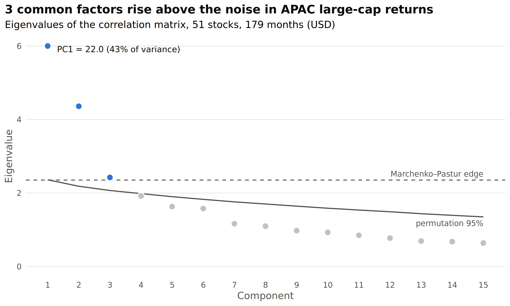

Out-of-sample pricing: factors from half the stocks (2011–18), tested on the other half (2019–25)
early <- months <as.Date("2019-01-01")fac_models <-list(CAPM ="MKT", `Fama–French 3`=c("MKT", "SMB3", "HML"),`Fama–French 5`=c("MKT", "SMB", "HML", "RMW", "CMA"))n_splits <-200set.seed(42)oos <-map_dfr(seq_len(n_splits), function(s) {# stratified random half of the stocks builds the factors; the rest are test assets A <-unlist(lapply(split(seq_len(N_), stock_market), \(ix) sample(ix, floor(length(ix) /2)))) B <-setdiff(seq_len(N_), A) pA <-pca_returns(Y[early, A]) pcs <-map_dfr(1:5, function(k) { Fk <- Y[!early, A] %*%eigenportfolio_weights(pA, k) g <-grs_test(Y[!early, B], Fk)tibble(model =paste0("PCA, ", k, if (k ==1) " factor"else" factors"),rms =12*sqrt(mean(g$alpha^2)), p = g$p) }) obs <-imap_dfr(fac_models, function(f, nm) { g <-grs_test(Y[!early, B], as.matrix(Fac[!early, f]))tibble(model = nm, rms =12*sqrt(mean(g$alpha^2)), p = g$p) })bind_rows(pcs, obs) |>mutate(split = s)})oos_sum <- oos |>group_by(model) |>summarise(rms_med =median(rms), rms_lo =quantile(rms, 0.1), rms_hi =quantile(rms, 0.9),reject =mean(p <0.05), .groups ="drop")best_pca <- oos_sum |>filter(str_starts(model, "PCA")) |>slice_min(rms_med, n =1)capm_oos <- oos_sum |>filter(model =="CAPM"); ff5_oos <- oos_sum |>filter(model =="Fama–French 5")pca_beats_capm <- oos |>filter(model %in%c(best_pca$model, "CAPM")) |>select(split, model, rms) |>pivot_wider(names_from = model, values_from = rms) |>summarise(m =mean(.data[[best_pca$model]] < CAPM)) |>pull(m)
TipAnswer first
Three common risks, and one dominates. Out of 51 eigenvalues, 3 rise above both noise benchmarks (random-matrix theory and a permutation test). The first component alone explains 43% of the variation in returns; the next two add 9% and 5%.
The three risks have plain names. PC1 is the regional market (correlation 0.97 with the Fama–French market factor). PC2 is Hong Kong/China vs Australia, with China’s state banks at one end and Australia’s banks at the other. PC3 is energy vs utilities, an oil factor that no Fama–French factor captures (the best linear combination of all candidate observables explains only 30% of it).
Fama–French factors span the market, partly span the second risk, and miss the third. Canonical correlations between the first 3 components and the six Fama–French factors are 0.98, 0.68, 0.32.
Statistical factors price out of sample at least as well. Built on one half of the stocks in 2011–18 and tested on the other half in 2019–25, PCA, 3 factors gives a median root-mean-square alpha of 8.2% a year, against 9.5% for the CAPM and 9.5% for Fama–French 5. The gap is modest and the tests have little power.
So what: a risk model for an APAC equity book needs a China-vs-Australia factor and an energy factor alongside the market. Size, value and profitability, as defined for the region, are not where the common risk is.
Question
Modules 01 and 03 started from factors chosen in advance: the market, then the Fama–French characteristics. Arbitrage Pricing Theory (Ross, 1976) only says that some small set of common factors drives returns and earns premia. It doesn’t say which ones. This module lets the data choose. How many common factors are in the returns of APAC large caps, what are they, and do they line up with the factors used in Module 03?
Method
Principal components. Each stock’s monthly USD excess return (same data as Module 03, Feb 2011–Dec 2025, 179 months) is standardised. The 51 × 51 correlation matrix is decomposed as \(\mathbf R = \mathbf V \boldsymbol\Lambda \mathbf V'\). Each eigenvalue \(\lambda_j\) is the variance captured by component j, and each column of \(\mathbf V\) gives the stocks’ loadings on it. Using correlations rather than covariances stops the most volatile stocks from dominating.
How many factors? Some eigenvalues will look large even in pure noise, so each is compared with two benchmarks:
the Marchenko–Pastur upper edge, \(\lambda_+ = (1+\sqrt{N/T})^2 = 2.35\), the largest eigenvalue expected from \(N\) uncorrelated series of length \(T\);
parallel analysis: the 95th percentile of each eigenvalue across 500 data sets in which each stock’s returns are shuffled in time independently. Shuffling destroys the cross-correlation but keeps each stock’s fat-tailed distribution.
What are they? Components are compared with the six Fama–French factors and with five other observables (each local index and two currencies) using correlations, canonical correlation, and LASSO regressions (glmnet, penalty chosen by 10-fold cross-validation, one-standard-error rule).
Do they price? Components estimated on the same data they are tested on would price that data almost by construction. So the test is out of sample in two dimensions. Each of 200 random splits divides the stocks in half, stratified by market. Eigenportfolios (traded versions of the components) are built from one half using 2011–18 data, and the GRS test is run on the other half in 2019–25. The CAPM and Fama–French models are tested on the same stocks and months.
Results
Three factors stand out from the noise
Show code
scree <-tibble(j =1:15, value = pc$values[1:15], pa = pa[1:15],sig = value >pmax(mp, pa))ymax <-6p_scree <-ggplot(scree, aes(j, pmin(value, ymax))) +geom_hline(yintercept = mp, linetype ="dashed", colour ="#52514e", linewidth =0.5) +geom_line(aes(y = pa), colour ="#52514e", linewidth =0.6) +geom_point(aes(fill = sig), shape =21, size =3, colour ="white", stroke =0.8) +annotate("text", x =1.3, y = ymax, label =sprintf("PC1 = %.1f (%s of variance)", pc$values[1], pct(pc$share[1], 0)),hjust =0, vjust =1, size =3.3, colour ="#0b0b0b") +annotate("text", x =15, y = mp, label ="Marchenko–Pastur edge", hjust =1, vjust =-0.6, size =3.1, colour ="#52514e") +annotate("text", x =15, y = pa[15], label ="permutation 95%", hjust =1, vjust =1.6, size =3.1, colour ="#52514e") +scale_fill_manual(values =c(`TRUE`="#2a78d6", `FALSE`="#c3c2b7"), guide ="none") +scale_x_continuous(breaks =1:15) +scale_y_continuous(limits =c(0, ymax)) +labs(title =sprintf("%d common factors rise above the noise in APAC large-cap returns", k_sig),subtitle =sprintf("Eigenvalues of the correlation matrix, %d stocks, %d months (USD)", N_, T_),x ="Component", y ="Eigenvalue") +theme_report() +theme(panel.grid.major.x =element_blank())dir.create("figures", showWarnings =FALSE)ggsave("figures/key_chart.png", p_scree, width =8, height =4.8, dpi =200, bg ="white")p_scree

Figure 1: Eigenvalues of the 51-stock correlation matrix (points), with the Marchenko–Pastur edge (dashed) and the 95th percentile from permuted data (line). Eigenvalues above both are treated as genuine common factors. The first eigenvalue is off the scale and labelled.
The first eigenvalue (22.0) is nearly ten times the noise edge. The second and third (4.36, 2.42) clear both benchmarks. From the fourth on (1.92, 1.63, …), the eigenvalues sit below both lines and are indistinguishable from what independent noise would produce. Together the three genuine factors explain 56% of the total variation, so most of each stock’s monthly movement remains stock-specific.
Table 1: The four stocks at each end of components 2–4.
Component
Most negative
Most positive
PC2
NAB, CBA, WES, WBC
0939, 1398, 3988, 0388
PC3
0883, STO, WDS, 0857
0066, 0002, 0003, A17U
PC4
0003, Z74, 0002, 0941
FMG, RIO, BHP, 0388
PC1, the regional market. Every stock loads positively (smallest loading 0.10). The heaviest loaders are OCBC, UOB, DBS Group, Henderson Land and the lightest are China Mobile, CSL, Tencent, CLP Holdings. The component correlates 0.97 with the Fama–French regional market and 0.89, 0.79 and 0.92 with the three local indices in USD.
PC2, Hong Kong/China against Australia. China’s state banks and HKEX at one end, Australia’s major banks and Wesfarmers at the other. It behaves like a long-short of the Hong Kong and Australian indices: those are the two largest LASSO coefficients, with opposite signs. It also correlates 0.54 with value and -0.55 with profitability, plausibly because Chinese banks trade cheaply against book value while Australian banks are highly profitable.
PC3, energy against utilities. CNOOC, Santos, Woodside and PetroChina at one end, MTR and the Hong Kong utilities at the other, regardless of market. This is an oil-price factor. The best LASSO combination of all eleven candidate observables explains only 30% of it. Module 08 models it with oil prices directly.
PC4 (below the noise threshold) contrasts the iron-ore miners with telecoms and utilities. It looks economically meaningful but cannot be distinguished statistically from noise with 15 years of data.
Table 2: LASSO regression of each component on eleven standardised candidate observables (six Fama–French factors, three local indices in USD, AUD and SGD). Coefficients at the one-standard-error penalty; R² is in-sample at that penalty.
PC
Selected (standardised coefficient)
R²
PC1
SG index +1.56, ASX index +1.34, MKT +1.01, HK index +0.87, SGD +0.06, HML +0.06, AUD +0.06
97%
PC2
HK index +1.45, ASX index -1.35, HML +0.26, RMW -0.20, WML -0.17, SGD +0.04
81%
PC3
MKT +0.87, ASX index -0.76, SG index -0.68, SMB -0.37, HK index +0.27, HML -0.26, SGD +0.26, WML +0.22, RMW -0.03
30%
PC4
SG index -0.38, RMW +0.23, HK index +0.21, SMB +0.14, HML -0.14, AUD +0.11, ASX index +0.11, WML -0.06
23%
The canonical correlations, 0.98, 0.68, 0.32, give the formal answer for the Fama–French set. The first canonical pair (essentially PC1 against the market factor) is nearly perfect. The second is moderate, mostly through the value and profitability factors picking up the China–Australia contrast. The third is weak. The six Fama–French factors contain the market, part of the second risk, and little of the third.
Figure 3: Out-of-sample root-mean-square alpha across 200 random splits (factors from one half of the stocks, 2011–18; test on the other half, 2019–25). Points: median; bars: 10th–90th percentile. Lower is better.
Table 3: Out-of-sample pricing summary over 200 splits.
Model
Median RMS α (p.a.)
10th–90th pct
GRS rejects at 5%
PCA, 3 factors
8.2%
6.9%–9.5%
0%
PCA, 4 factors
8.3%
6.9%–9.6%
0%
PCA, 1 factor
8.4%
6.7%–9.4%
0%
PCA, 5 factors
8.4%
6.8%–10.0%
0%
PCA, 2 factors
8.6%
7.0%–9.7%
0%
Fama–French 5
9.5%
7.7%–10.7%
2%
CAPM
9.5%
7.5%–10.9%
4%
Fama–French 3
10.4%
7.9%–11.6%
19%
Out of sample, the statistical factors leave smaller pricing errors than the observable ones. The best, PCA, 3 factors, has a median RMS alpha of 8.2% a year and beats the CAPM in 92% of splits. The Fama–French models do no better than the CAPM here, consistent with Module 03. Most of the gain comes from the first component, though: a single statistical factor already does about as well as three to five. The intervals overlap substantially, and with only 84 test months GRS rarely rejects any model (power is low, so “not rejected” here is weak evidence of a good fit). Pricing errors are also larger here than in Module 03’s full-sample tests, partly because alphas estimated over seven years are noisier than over fifteen.
Limitations
Survivor sample. As in Module 03, today’s large caps are the test assets, which biases alphas upward for every model. It does not affect the factor-count results, which concern covariances.
Stationarity. PCA assumes one stable covariance structure over 15 years. Module 01 found that betas shifted after 2020 (for example, the Chinese banks decoupled), so the loadings on PC2 in particular are averages over two regimes.
Labelling is interpretation. Components are defined only up to rotation within the significant set. The names given here describe the loadings but are not unique.
Small test. 51 stocks and a 7-year test window limit power. A broader universe (all regional stocks) would sharpen both the factor count and the pricing comparison.
References
Connor, G., & Korajczyk, R. A. (1988). Risk and return in an equilibrium APT: Application of a new test methodology. Journal of Financial Economics, 21(2), 255–289.
Horn, J. L. (1965). A rationale and test for the number of factors in factor analysis. Psychometrika, 30(2), 179–185.
Marchenko, V. A., & Pastur, L. A. (1967). Distribution of eigenvalues for some sets of random matrices. Mathematics of the USSR-Sbornik, 1(4), 457–483.
Ross, S. A. (1976). The arbitrage theory of capital asset pricing. Journal of Economic Theory, 13(3), 341–360.
Tibshirani, R. (1996). Regression shrinkage and selection via the lasso. Journal of the Royal Statistical Society B, 58(1), 267–288.